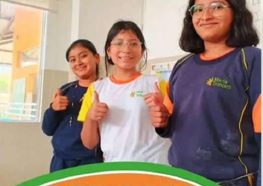
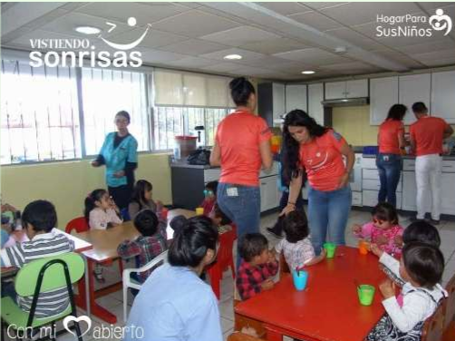
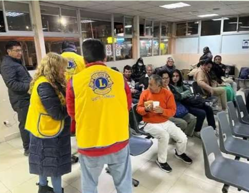
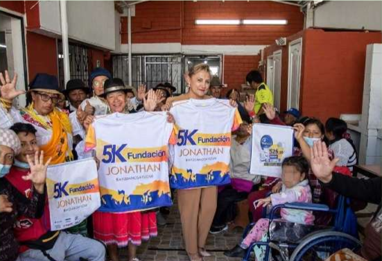
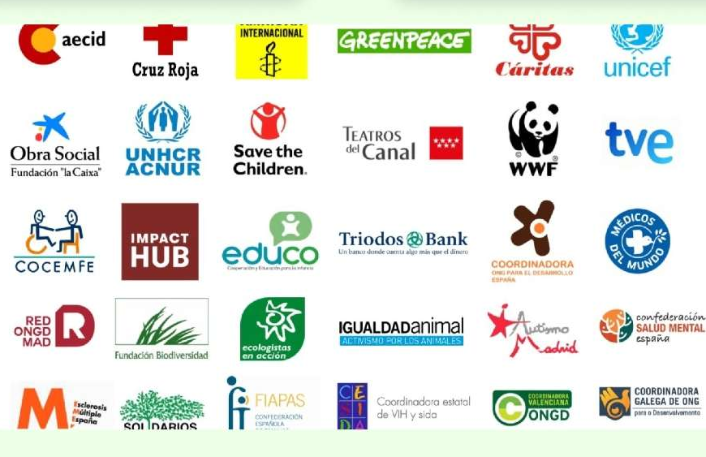
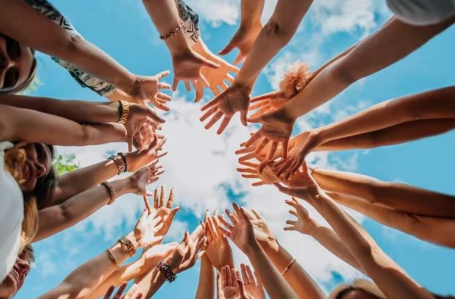

Nuestros Trabajos ONGs






Se dedica a rescatar alimentos que serían descartados, los clasifica y los distribuye a personas vulnerables a través de redes de comedores, comunidades, etc.
- Entrega de alimentos a personas y familias que lo necesitan.
- Apoyo comunitario mediante voluntariado.
Es la organización oficial de la Iglesia Católica en Ecuador encargada de gestionar y organizar la obra social, promoviendo la solidaridad y el desarrollo integral de las comunidades más vulnerables.
-“Un mundo en el que la dignidad de toda persona y la justicia social se respeten plenamente, y donde todas las comunidades puedan vivir con paz, equidad y solidaridad.”
- Seguridad alimentaria: Implementación de programas agrícolas y apoyo a la producción local.
- Salud: Promoción de la salud comunitaria y prevención de enfermedades.
- Educación: Capacitación y formación en derechos humanos y desarrollo sostenible.
- Movilidad humana: Asistencia a migrantes y refugiados.
- Gestión de riesgos: Preparación y respuesta ante desastres naturales.
- Ecoteología: Promoción de la espiritualidad ecológica y el cuidado de la casa común.

Se dedica a trabajar con niños y adolescentes de escasos recursos, en el ámbito de salud.
Cirugías de alta complejidad en especialidades como cardiología, neurocirugía, traumatología, prevención de ceguera en algunos casos.

Mejorar la calidad de vida de los más vulnerables entregando vestimenta en buen estado recolectada mediante donaciones de sectores diversos.
- Entrega de vestimenta en buen estado.
- Donaciones itinerantes.
- Eventos especiales (Día del Niño, Navidad...)

Se dedica a trabajar con niños de 0-4 años, familias con niños pequeños que necesitan apoyo en su desarrollo temprano.
Ayuda en psicomotricidad, terapia ocupacional, estimulación motriz y del lenguaje.

Se dedica a trabajar con niños con diagnóstico de autismo u otros trastornos del neurodesarrollo.
Terapias especializadas, educación adaptada, apoyo a la familia y acompañamiento.

Se dedica a trabajar con niños(as) con fisura de labio y/o paladar.
Cirugías reconstructivas gratuitas, atención integral previa evaluación.

Atención integral para niños, niñas y adolescentes con trastornos del neurodesarrollo y apoyo socioemocional.
Terapias, servicios educativos y de inclusión, apoyo a familias.

Trabajan para mejorar la salud y el bienestar de los países de América Latina y el Caribe.
“Un continente de las Américas donde todas las personas puedan alcanzar el más alto nivel posible de salud y bienestar.”
- Acceso a Medicamentos para el Cáncer Infantil
- Encuesta Nacional de Salud y Nutrición (ENSANUT)
- Lucha contra la Desnutrición Crónica Infantil (DCI)

Promueven los derechos de la niñez y adolescencia en salud, educación y protección.
“Un mundo en el que los derechos de cada niño y niña se cumplan plenamente…”
- App Wawamor
- Colaboración con Ministerio de Educación
- Iniciativas de protección integral en Quito

Se dedica a rescatar, acoger y proteger animales abandonados o maltratados, principalmente perros y gatos.
Servicios de refugio para esos animales, atención veterinaria probablemente básica, rescates, campañas de adopción.

Se dedica a la conservación del trópico: biodiversidad, protección de áreas naturales, e investigación ambiental.
Protección de reservas naturales, conservación de especies, educación ambiental. Realizan talleres, divulgación, etc.

WWF trabaja globalmente para conservar la naturaleza, proteger especies en peligro, preservar ecosistemas críticos y promover desarrollo sostenible.
“Detener la degradación ambiental del planeta y construir un futuro donde las personas vivan en armonía con la naturaleza.”
- Proyectos de conservación en bosques tropicales, Andes y Galápagos.
- Programas de protección de especies emblemáticas como jaguares, tortugas marinas, aves y peces.
- Colaboración con comunidades locales para uso sostenible de recursos y educación ambiental.

Se dedica a trabajar con niños, niñas, adolescentes en zonas vulnerables de Quito (La Magdalena, La Colmena, El Panecillo, etc.)
Centros comunitarios con tutorías (primaria y bachillerato), biblioteca, centro de cómputo, talleres de habilidades de vida, liderazgo.

Se dedica a trabajar con niños y niñas que deben trabajar (o trabajan) para ayudar a sus familias; brindar alternativas educativas, sociales y culturales para romper círculos de pobreza.
Educación, salud básica, apoyo social, programas para familias, capacitación, alimentación, etc.

Dar apoyo a niños y jóvenes de barrios desfavorecidos de Quito para que accedan a educación, inculcando valores humanos, académicos y sociales.
Tutorías y clases de refuerzo en asignaturas diversas (matemáticas, lenguaje, arte, etc.).
También ayudan con útiles escolares, uniformes, matrículas y transporte escolar si es necesario.

Trabajan para eliminar la violencia contra la niñez y adolescencia más vulnerable, enfocándose en áreas como salud, educación y protección.
“Nuestra visión para cada niño y niña: vida en toda su plenitud; nuestra oración para cada corazón: la voluntad para hacer esto posible.”
- Desarrollo de programas educativos y de liderazgo para jóvenes en comunidades vulnerables.
- Implementación de iniciativas de protección infantil y respuesta a emergencias.
- Apadrinamiento de un niño o niña para poder ayudarlo a crecer.


“Creemos en un futuro en el que el bienestar de las personas y el equilibrio de la naturaleza vayan de la mano, promoviendo la equidad, la inclusión, la educación de calidad y la sostenibilidad ambiental para todos”